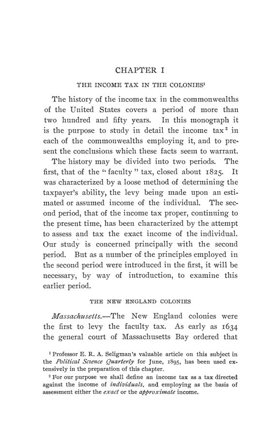

Kinsman, 1903: sessenta anos de imposto de renda estadual
Leitura: 8 min
Em 1903, Delos O. Kinsman leu as leis de cada estado americano desde a admissão na União para contar a história do imposto de renda estadual. Os números de arrecadação e a conclusão do autor, descritos.


Massachusetts, 1874. Uma cidade de 14 mil habitantes, com patrimônio avaliado em 8,4 milhões de dólares e muitos comerciantes e industriais prósperos, lança o imposto de renda sobre apenas treze pessoas: caixas de banco, advogados, clérigos, médicos, um agente de fábrica e um atuário. A renda tributada de todos somava 15.121 dólares. O caso está no relatório da comissão tributária estadual de 1875, e Delos O. Kinsman o reproduz para mostrar como a lei funcionava na prática.
The Income Tax in the Commonwealths of the United States saiu em novembro de 1903 como volume 4, nº 4, da terceira série das Publications of the American Economic Association, em 128 páginas. No prefácio, assinado em Whitewater, Wisconsin, o autor diz ter escrito para estudantes de finanças públicas e legisladores. Como leis eram aprovadas e revogadas sem chegar às consolidações, ele afirma ter examinado as leis de cada sessão legislativa de cada estado, desde a admissão na União, além de decisões judiciais, relatórios financeiros, mensagens de governadores e constituições.
Quantos estados tentaram tributar a renda?
Kinsman divide a história em dois períodos. O primeiro, até cerca de 1825, é o do imposto sobre a “faculdade”, cobrado sobre uma renda estimada ou presumida. O segundo, de cerca de 1840 em diante, é o do imposto de renda propriamente dito, que tenta medir a renda exata de cada contribuinte. Já em 1646 uma lei da baía de Massachusetts cobrava 3 xelins e 4 pence por ano de todo trabalhador ou artesão que ganhasse no verão 18 pence ou mais por dia.
O autor identifica três ondas: de 1840 a 1850, quando seis estados introduziram o imposto; de 1860 a 1870, quando sete o fizeram; e uma retomada a partir de cerca de 1895. Na primeira, o motivo dominante foi a dívida acumulada com obras de infraestrutura; na segunda, as despesas da Guerra Civil. Na fase recente, diz Kinsman, pesa mais a demanda por justiça na distribuição da carga.
Como a lei funcionava em Massachusetts?
Massachusetts tem a experiência mais longa. A lei isentava a renda de profissões e ofícios até 600 dólares a partir de 1849, e o limite subiu para 1.000 dólares em 1866. Em 1873, depois de uma campanha pela revogação, um acordo entre as duas casas legislativas fixou a isenção em 2.000 dólares. O Boston Daily Advertiser, citado pelo autor, argumentava que a renda poupada era tributada duas vezes, uma como renda e outra como o bem em que fora investida.
O imposto era lançado pelas cidades, e cada junta local de avaliadores interpretava a lei a seu modo. Boston isentava a parte da renda investida em bens tributáveis; Cambridge tributava toda a renda; outras cidades deduziam 6% do capital como juros e tributavam só o excedente. Segundo Kinsman, as cidades vizinhas de Boston que queriam atrair moradores de negócios e assalariados simplesmente ignoravam o imposto.
A comissão de 1875 reconheceu que nenhum tributo do sistema tinha aplicação tão desigual, e ainda assim defendeu o imposto:
“ninguém pode entender claramente este imposto sem admitir tanto sua economia quanto sua justiça” (“no one can clearly understand this tax without admitting both its economy and its justice”)
Ela recomendou baixar a isenção para 1.000 dólares, deduzir 6% do valor dos bens usados no negócio e criar um órgão central de supervisão. Nada foi adotado. A comissão de 1897 recomendou revogar o imposto e substituí-lo por um tributo sobre a renda presumida pelo gasto com moradia: 10% sobre o aluguel acima de 400 dólares anuais, cobrado do ocupante. Também isso ficou sem efeito.
E nos outros estados?
A Pensilvânia cobrou o imposto de 1841 a 1871. Em 1840, para enfrentar a dívida estadual, criou 1% sobre salários de cargos públicos e um mil por dólar sobre a renda de ofícios e profissões; em 1841 as alíquotas subiram para 2% e 1%. Pela mensagem do governador citada por Kinsman, num total de impostos de 910 mil dólares, os cargos públicos tinham rendido apenas 1.386. O mesmo estado, porém, tributava os dividendos das empresas: em 1864, 3% sobre o lucro líquido anual, pago pelas próprias companhias. Segundo T. K. Worthington, citado pelo autor, esse tributo respondia por 53,3% da receita estadual em 1886.
Maryland cobrou 2,5% sobre salários e rendas profissionais a partir de 1842, com isenção abaixo de 500 dólares. Em 1849, só pouco mais da metade do imposto estadual geral foi arrecadada, e nenhum imposto de renda aparece como recolhido; em 1850 a lei foi na prática revogada. A Virgínia começou em 1843 com 1% sobre a renda monetária acima de 400 dólares, e 2,5% sobre juros. O Delaware cobrou, de 1869 a 1871, 2% sobre receitas brutas de banqueiros privados, corretores e agentes imobiliários.
O desenho variou de todos os modos possíveis, registra o autor: imposto geral e especial, por cota e por alíquota, proporcional e progressivo, com isenção fixa ou variável. Seis estados usaram alíquotas progressivas. As isenções fixas foram em geral de 300 a 2.500 dólares, sendo 500 e 1.000 as mais comuns; a da Carolina do Sul, em 1903, era de 2.500. A administração foi quase sempre a mesma: lançamento por avaliadores locais e declaração do próprio contribuinte, sob pena severa.
Por que, segundo o autor, o imposto falhou?
Kinsman distingue princípio e aplicação. Em teoria, escreve, o imposto de renda é o sistema mais justo já proposto, e a oposição nunca o atacou seriamente nesse terreno. Ele observa que estados aprovaram repetidas vezes leis bem desenhadas, e elas falharam tanto quanto as ruins. Daí sua conclusão:
“o imposto de renda estadual foi um fracasso, devido ao fracasso da administração” (“the state income tax has been a failure, due to the failure of administration”)
O autor aponta quatro causas: o método de autodeclaração, a negligência dos funcionários, o esforço persistente dos contribuintes para evadir e a natureza da própria renda, fácil de ocultar e às vezes difícil de medir até para quem a recebe. A comparação decisiva é com a Inglaterra, onde, segundo ele, o imposto só funcionava onde era cobrado na fonte, e três quartos da renda podiam ser tributados sem perguntar nada ao contribuinte. Com a organização econômica americana de então, conclui, essa cobrança não alcançaria a maior parte da renda, e um imposto geral estadual continuaria a falhar até que a estrutura da economia permitisse outro método.
Na minha leitura
Na minha leitura, o livro é uma demonstração empírica precoce de que a arrecadação de um imposto depende mais da informação disponível ao fisco do que da alíquota escrita na lei. Os dois casos de sucesso que Kinsman encontra têm a mesma estrutura: o imposto sobre o lucro das empresas na Pensilvânia, pago pelas companhias direto ao Tesouro, e o imposto inglês cobrado na fonte. Em ambos, um terceiro informa e recolhe. Onde a base dependia só da palavra do contribuinte, a receita foi quase nula, qualquer que fosse o desenho.
O capítulo de Massachusetts acrescenta um segundo mecanismo: com o lançamento entregue às cidades, cada uma podia aliviar a cobrança para atrair moradores de renda alta, e muitas fizeram isso. É concorrência fiscal dentro de um único estado. Os números do autor, por fim, vêm de relatórios oficiais que nem sempre separavam o imposto de renda das demais receitas, limitação que ele mesmo registra para a Pensilvânia e para Massachusetts.
Glossário
- Imposto sobre a “faculdade” (faculty tax)
- tributo colonial sobre a capacidade de ganho estimada de uma pessoa, e não sobre a renda medida.
- Autodeclaração (self-assessment)
- sistema em que o próprio contribuinte informa ao fisco a renda a tributar.
- Cobrança na fonte
- retenção do imposto por quem paga a renda, como o empregador ou a empresa que distribui dividendos.
- Isenção
- parcela da renda que não é tributada.
- Alíquota progressiva
- percentual que sobe conforme aumenta a renda.
- Imposto por cota (apportioned tax)
- tributo em que se fixa primeiro o total a arrecadar e depois se reparte entre as localidades.
- Bens pessoais (personal estate)
- bens móveis e financeiros, distintos de terras e imóveis, avaliados para o imposto sobre a propriedade.
Fontes
- The Income Tax in the Commonwealths of the United States (pp. 1–128). JSTOR · Internet Archive (PDF)
- Sumário da edição no JSTOR: Publications of the American Economic Association, 3ª série, vol. 4, nº 4.
Documento em domínio público (EUA, publicado antes de 1931), via JSTOR Early Journal Content e Internet Archive. Resumo e comentário do autor deste site, sem afiliação com a American Economic Association. Encontrou um erro? Escreva: a correção é publicada no próprio texto, com data.
← Nº 67 · Coman, 1903: meio século de trabalho por contrato no Havaí Nº 69 · Nova Orleans, 1903: o Sul agrícola, Seligman e o destino do imposto →